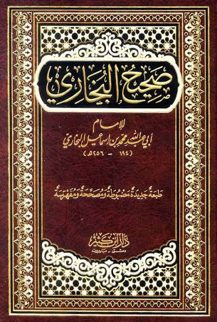

الإمام أبو عبد الله محمد بن إسماعيل بن إبراهيم البخاري من أبرز علماء الحديث والفقه عند أهل السنة والجماعة. عاش في القرن الثالث الهجري، واشتهر بمعرفته بالروايات وأحوال ناقليها، وبمكانته في حفظ الحديث ونقده، حتى عُرف بلقب «أمير المؤمنين في الحديث».
وُلد في بخارى سنة 194هـ، الموافق 810م، وهي مدينة تقع اليوم في أوزبكستان. كان والده من أهل الحديث، لكنه توفي والبخاري صغير، فتولت والدته رعايته. بدأ تعلّمه في الكتّاب، واتجه إلى حفظ الحديث نحو العاشرة، ثم أخذ يحضر مجالس العلماء ويتعلم منهم.
خرج نحو سنة 210هـ للحج مع والدته وأخيه أحمد، ثم بقي في مكة لمواصلة التعلم. وانتقل إلى المدينة، وتوسعت رحلاته لتشمل مراكز علمية في خراسان والعراق والشام ومصر. أتاحت له هذه الرحلات سماع الحديث من شيوخ كثيرين، ومقارنة الروايات، والتعرف إلى طرق نقلها.
من أبرز شيوخه أحمد بن حنبل، وإسحاق بن راهويه، ويحيى بن معين، وعلي بن المديني. وكان اهتمامه يتجاوز حفظ الروايات إلى دراسة أسانيدها ومعرفة أحوال الرواة.
احتل علي بن المديني مكانة خاصة لدى البخاري؛ فقد كان من كبار المتخصصين في علل الحديث، وهي دراسة ما قد يخفى من أسباب تؤثر في صحة الرواية. أخذ البخاري عنه وروى أحاديثه في صحيحه، وتذكر ترجمته شدة تقدير البخاري لعلمه وحرصه على مجالسته والاستفادة منه.
ارتبط اسم البخاري بكتابه «الجامع الصحيح»، الذي استغرق تصنيفه ستة عشر عامًا. وهو أحد الكتب الستة المعتمدة في الحديث عند أهل السنة، ويجمع موضوعات متنوعة، منها الأحكام والتفسير والآداب. وقد استمرت العناية به عبر العصور من خلال الشروح والمختصرات والدراسة، فأصبح مرجعًا بارزًا للعلماء وطلاب العلم.
وإلى جانب التأليف، أخذ عنه عدد من المحدثين، منهم مسلم بن الحجاج والترمذي وابن خزيمة. ولذلك امتد أثره العلمي من كتبه إلى التعليم ونقل المعرفة، عبر تلاميذه والرواة الذين سمعوا منه ونقلوا أعماله إلى الأجيال التالية.
شهدت سنواته الأخيرة خلافات في نيسابور وبخارى، انتهت بخروجه منهما. واستقر في قرية خرتنك بالقرب من سمرقند، حيث مرض وتوفي ليلة عيد الفطر سنة 256هـ، الموافق 870م.
تقسيمات صحيح البخاري
يتناول هذا الباب معنى الإيمان وزيادته ونقصانه، والمحبة والبغض لله، ويضم آيات وأقوالًا تمهيدية.
يستهل البخاري الكتاب بآيتين في فضل العلم: ﴿يَرْفَعِ اللَّهُ الَّذِينَ آمَنُوا مِنكُمْ وَالَّذِينَ أُوتُوا الْعِلْمَ دَرَجَاتٍ﴾ [المجادلة: 11]، و﴿رَبِّ زِدْنِي عِلْمًا﴾ [طه: 114]. لا يضم هذا الباب حديثًا مرقّمًا مستقلًا في هذا الفهرس.
يبيّن هذا الباب تقديم العلم على القول والعمل، ويستشهد بآيات وأحاديث معلّقة وآثار في فضل التعلم والعلماء، ومنها تفسير ابن عباس للربانيين بالحكماء الفقهاء. لا يضم حديثًا مرقّمًا مستقلًا في هذا الفهرس.